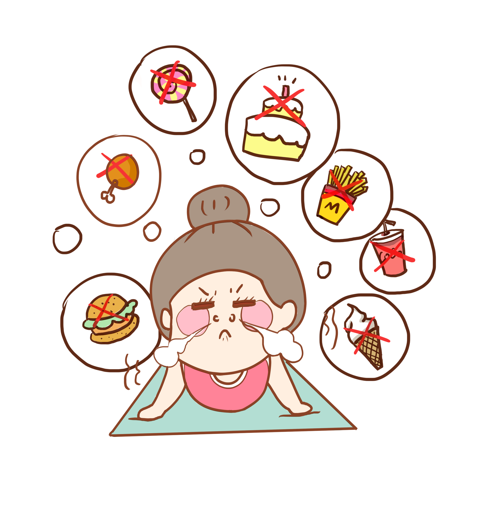
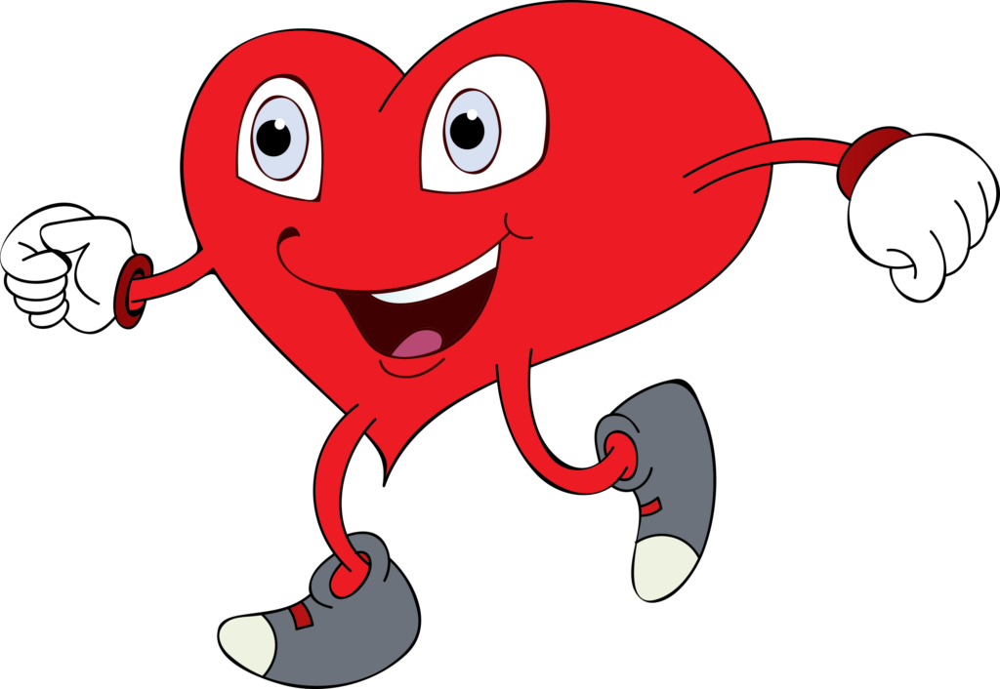
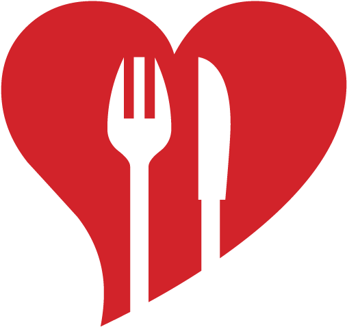

BMI - Indeks tjelesne mase (engl. Body Mass Index) je jedan od načina procjene uhranjenosti. Od svih poznatih indeksa, indeks tjelesne mase je najuže povezan s količinom prekomjernog masnog tkiva u ljudskom tijelu, a uz to ga je relativno jednostavno izračunati ili očitati iz tablica. Izračun BMI se temelji na odnosu tjelesne težine i kvadrata visine osobe.
Indeks tjelesne mase jedno je od najčešće korištenih mjerila za određivanje debljine prema medicinskim kriterijima. Pojam debljine često se neprecizno određuje, dok je ITM točan pokazatelj prekomjerne tjelesne težine ili debljine. Procjenjuje težinu u odnosu na visinu i može poslužiti kao pokazatelj rizika obolijevanja i smrti zbog prekomjerne težine. Prema njegovim vrijednostima težina odraslih osoba klasificira se kao normalna, prekomjerna ili debljina.
ITM koji osobu svrstava u kategoriju pretilih može ukazivati na povećani rizik obolijevanja od teških bolesti kao što su šećerna bolest, srčane bolesti, povišeni krvni tlak pa čak i prerana smrt. Debljina nije samo problem težine nego je i zdravstveni problem koji treba pravodobno dijagnosticirati i primjereno liječiti.
Važno je da osobe koje se smatraju "punijima" izračunaju svoj ITM kako bi utvrdile nisu li zapravo već pretile. Naime, poput krvnog tlaka i razine kolesterola, BMI je važan pokazatelj pri procjeni općeg zdravstvenog stanja jer ugroženu osobu upozorava da poduzme potrebne mjere i tako spriječi buduće zdravstvene probleme.
Prema definiciji Svjetske zdravstvene organizacije (WHO), vrijednost ITM 18,5 - 24,9 označava normalnu tjelesnu težinu, 25 - 29,9 prekomjernu tjelesnu težinu, a vrijednost iznad 30 označava debljinu. Općenito, kod prekomjerno teških ili debelih osoba svako povećanje BMI povećava rizik od pojave zdravstvenih problema.
